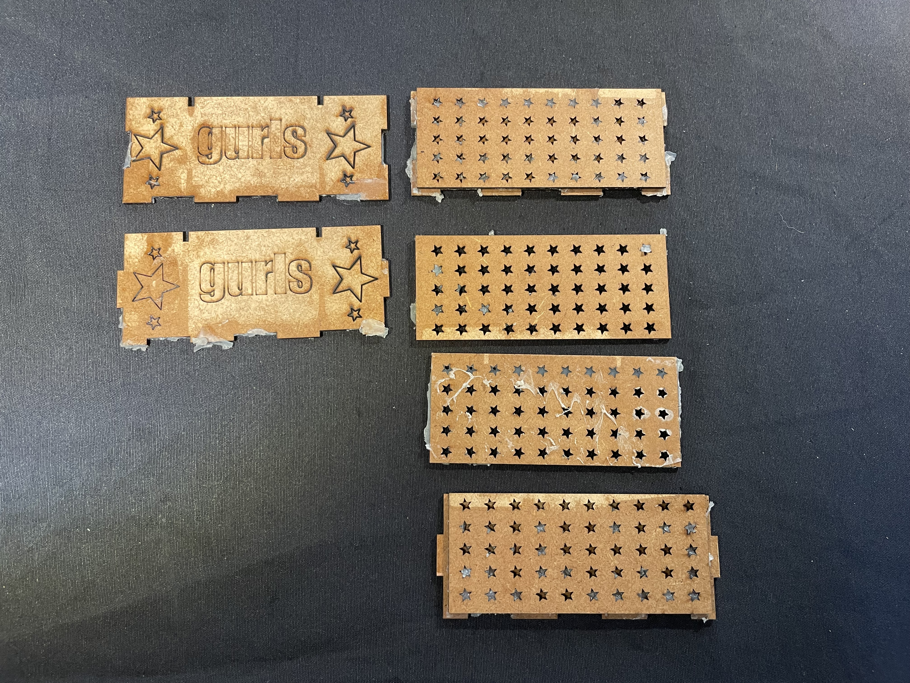
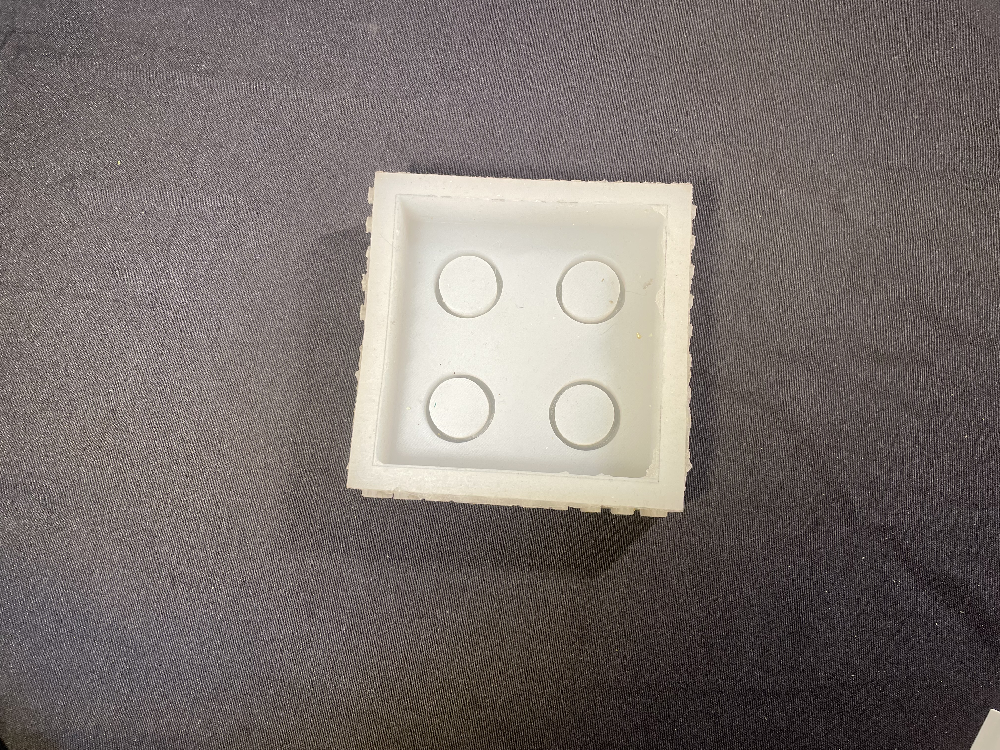
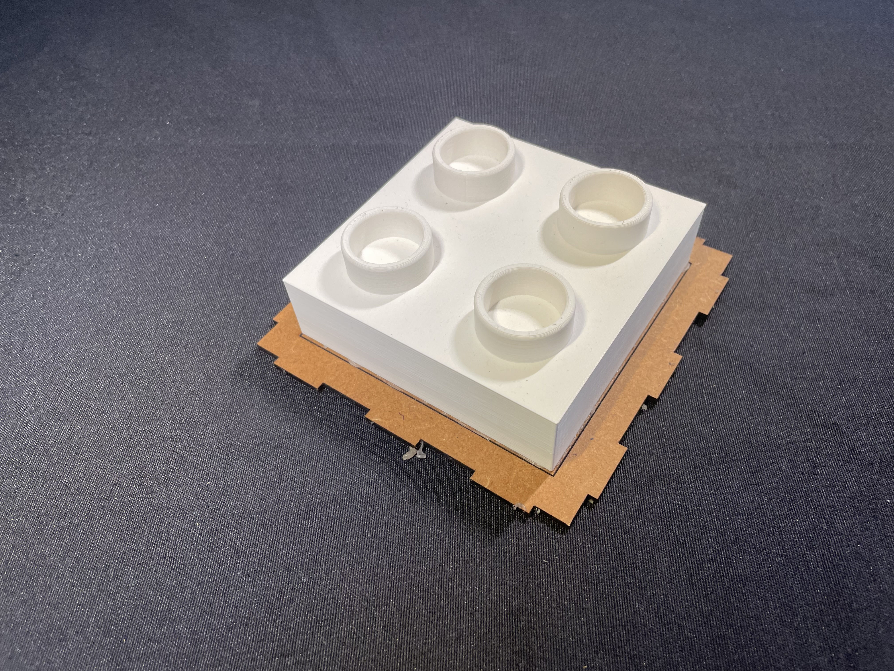
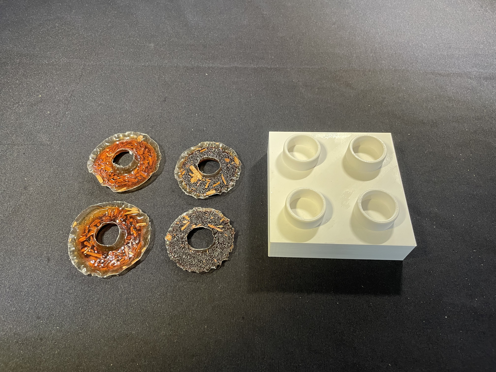
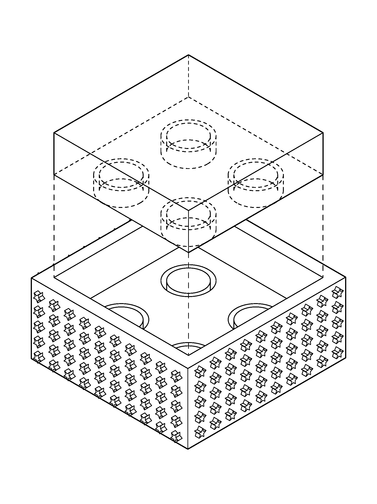

Laser cutting, CNC milling, 3D printing, silicone molds, biomaterials
Outcome
Documentation + reflection + test artifacts
Learning Tools as World-Building
Course documentation & reflection
This course introduced a set of foundational fabrication workflows — laser cutting, 3D printing, mold making with silicone, and casting biomaterials. Rather than treating them as isolated skills, I approached them as a connected pipeline: design → prototyping → replication → material experimentation.
What matters to me is not just “how to make,” but what these techniques enable conceptually: modular systems, repeatable parts, distributed production, and material storytelling. Especially through molds and bio-casting, the work starts to shift from object-design to system-design — where interaction, maintenance, and material behaviour become part of the narrative.
Laser Cutting
Rapid iteration through 2D design, joinery logic, and patterning.
Laser cutting taught me speed + precision: how a small change in vector geometry immediately affects assembly, tolerance, and visual language.
The “panel” tests became a way to explore surface identity (text, cut-outs, ornament) while also learning the practical constraints of kerf, burn marks, and fit.

Laser-cut panel tests — patterning, engraving, and assembly tolerances.
CNC Milling
Subtractive fabrication, tolerances, and thinking in toolpaths.
CNC milling introduced a different temporal and material logic compared to laser cutting.
Instead of instant results, the process required planning toolpaths, understanding material resistance,
and anticipating errors before they happen. Designing for CNC meant slowing down and committing to decisions earlier in the workflow.
What interested me most was how CNC sits between craft and automation: every mistake is amplified, but every successful cut produces a level of precision and material presence that feels structural rather than graphic.
3D Printing
Prototyping a repeatable geometry for casting: the negative becomes the design.
3D printing shifted my thinking to “designing the void”: chamfers, draft angles, wall thickness, and how parts release from a mold.
The printed block with four cavities acted as a master model for silicone casting, where the accuracy of the print directly shaped the quality of the mold.

3D printed master — four cavity layout used for silicone molding.

Master with inserts — testing depth, fit, and release logic.
Silicone Mold Making
Learning replication as a design strategy (and where it fails).
Mold making is where “precision” meets “process”: bubbles, curing time, mixing ratios, and surface finish.
It also introduced the idea of scaling up production — once a mold works, the object becomes a series, not a singular artifact.
Biomaterials in the Mold
Casting as material research: behaviour, texture, and unpredictability.
Casting biomaterials introduced a different kind of control — less about perfect replication, more about material expression.
The results vary in translucency, brittleness, and surface texture depending on the mix and inclusions. Instead of treating this as “error,” I’m interested in how variation can carry meaning: each cast becomes a record of a specific batch, time, and condition.

Biomaterial casting tests — variation through mix + inclusions.
Technical Drawing
Diagramming the fabrication logic: parts, layers, and how they align.
This diagram captures the assembly logic of the system: a top plate aligned to a base structure with repeated circular features.
Technical drawings help me translate between concept and fabrication — they are both instruction and storyboard for how an object comes into being.

Exploded diagram — alignment and part logic. :contentReference[oaicite:2]{index=2}
Link to My Broader Project Direction
From skills to systems: what these tools unlock conceptually.
These workflows feel directly relevant to my practice because they support modular thinking: repeatable units, distributed making, and material narratives.
Laser cutting gives fast structural language, 3D printing enables custom masters, and molding/casting opens up series-making — but biomaterials add a critical layer: the possibility of designing with decay, repair, and ecological behaviour rather than permanence.